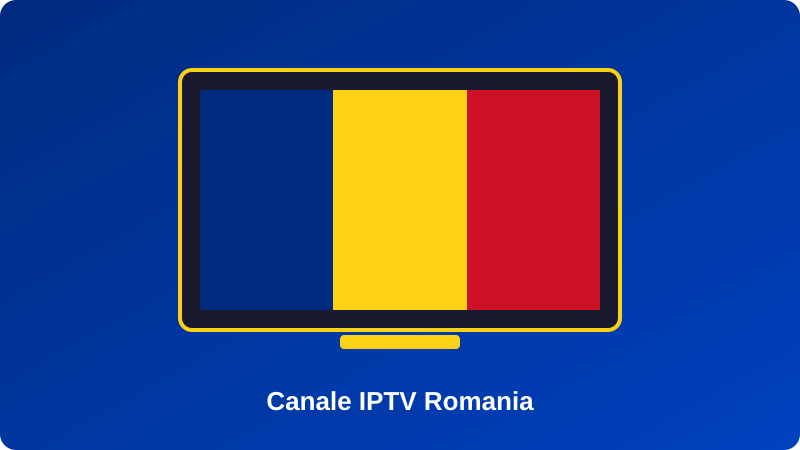

Cand cauti canale iptv romania, vrei de fapt un lucru clar: sa afli ce posturi de televiziune romanesti poti vedea prin internet, in ce calitate si pe ce aparate. Ai in minte Pro TV, Antena 1, Kanal D, Digi24, Antena 3 sau Prima TV, putin sport pentru weekend si filme pentru seara. Intrebarea este cum alegi o lista care chiar functioneaza, mai ales daca locuiesti departe de tara.
Un pachet bun de canale iptv romania nu inseamna doar numarul de posturi. Conteaza stabilitatea in orele de varf, ghidul de programe, calitatea imaginii, suportul in limba romana si faptul ca merge la fel in Germania, Italia, Spania, Marea Britanie sau Belgia. Fara aceste lucruri, o lista lunga devine repede o sursa de nervi, mai ales in minutul important al unui meci.
In acest ghid explicam ce canale gasesti, cum sunt grupate pe categorii, cum verifici o lista inainte sa platesti, ce aparate sunt potrivite si ce greseli sa eviti. Echipa Romania IPTV lucreaza zilnic cu familii din diaspora, iar sfaturile de mai jos vin din situatii reale. Pentru o privire de ansamblu, incepe cu ghidul principal despre iptv romania.

Cuprins
- Ce inseamna canale IPTV Romania
- Categoriile de canale pe care le gasesti
- Canale generaliste si de stiri
- Sport, filme si canale pentru copii
- Cum verifici o lista de canale in 5 pasi
- Canale IPTV Romania in diaspora
- Aplicatii si dispozitive potrivite
- Greseli frecvente si cand merita un abonament
- Intrebari frecvente
Ce inseamna canale IPTV Romania
IPTV vine de la Internet Protocol Television: televiziunea ajunge la tine prin conexiunea de internet, nu prin antena, cablu sau satelit. Cand spui canale iptv romania, te referi la lista de posturi romanesti disponibile intr-un astfel de serviciu, de obicei intr-o aplicatie pe televizor, telefon sau box Android.
Cum ajung canalele la tine
Furnizorul primeste semnalul televiziunilor, il proceseaza pe servere si il trimite prin internet. Tu deschizi aplicatia, alegi postul si il vezi in cateva secunde. Nu ai nevoie de parabola, de receptor sau de un abonament la cablu in tara de resedinta.
De ce cauta romanii canale IPTV
Motivele sunt simple: lipsa unei oferte romanesti la cablul local, preturile mari, dorinta de a tine legatura cu tara si comoditatea. Pentru multi romani din strainatate, televizorul pornit pe un post de acasa inseamna sentimentul de familie. Daca vrei sa vezi lista completa pe categorii, citeste si canale romanesti.
Categoriile de canale pe care le gasesti
O lista serioasa de canale iptv romania este organizata clar, ca sa nu deruleze omul prin sute de posturi pana gaseste ce vrea. Iata grupele pe care le vezi de obicei.
| Categorie | Exemple de continut | Cui i se potriveste |
|---|---|---|
| Generaliste | Seriale, emisiuni, divertisment | Toata familia |
| Stiri | Jurnale, dezbateri, breaking news | Cine vrea sa fie la curent |
| Sport | Fotbal, tenis, handbal, Formula 1 | Suporteri |
| Filme si seriale | Productii straine si romanesti | Seara si weekend |
| Copii | Desene animate, programe educative | Familii cu copii |
| Muzica | Videoclipuri, manele, muzica populara | Cine vrea fundal sonor |
| Documentare | Natura, istorie, calatorii | Curiosi |
Canale in HD si 4K
Multe posturi romanesti ruleaza in HD, iar o parte din ofertele de sport au si imagine superioara. Tine minte ca 4K nu inseamna automat calitate mai buna: conteaza si bitrate-ul, adica cata informatie trimite serverul pe secunda.
Canale locale si regionale
Pe langa marile televiziuni, unele liste includ posturi locale si regionale. Pentru cine a plecat dintr-un oras mic, ele pastreaza legatura cu comunitatea de acasa.
Cum se schimba lista in timp
Un furnizor activ adauga canale noi, scoate posturile care si-au incetat emisia si actualizeaza ghidul de programe. De aceea, intreaba cat de des se reinnoiesc canale iptv romania din oferta si daca primesti anunturi cand se schimba ceva. Un serviciu transparent iti spune din timp, nu dupa ce ai ramas fara postul preferat.
Favorite si organizare
Dupa ce primesti lista, creeaza un grup de favorite cu cele 10-15 posturi pe care le urmaresti zilnic. Economisesti timp si eviti derularea prin sute de canale, iar copiii isi gasesc singuri desenele animate preferate.
Canale generaliste si de stiri
Generalistele sunt coloana vertebrala a oricarei liste de canale iptv romania. Aici intra posturile cu seriale, emisiuni de divertisment, show-uri de seara si programe de weekend. Un pachet bun le include pe toate cele importante, cu ghid de programe actualizat.
Ce sa verifici la canalele generaliste
- Daca sunetul este sincron cu imaginea.
- Daca ghidul de programe (EPG) arata ora corecta pentru fusul tau orar.
- Daca postul nu se opreste in timpul reclamelor.
- Daca exista varianta HD, nu doar SD.
Stirile in direct
Canalele de stiri sunt cerute mai ales de cei care vor sa urmareasca evenimentele din Romania in timp real: alegeri, vreme, trafic, situatii de criza. Pentru ele conteaza latenta mica si stabilitatea. Un flux care intarzie cateva minute strica sensul stirii.
Sport, filme si canale pentru copii
Aici se vede diferenta dintre un serviciu bun si unul mediocru. Sportul si filmele consuma cea mai multa latime de banda si sunt cele mai sensibile la blocaje. Cand evaluezi canale iptv romania, testeaza intai aceste categorii.
Sport
Meciurile de fotbal, in special cele din weekend si din cupele europene, aduc un val de utilizatori in acelasi timp. Un furnizor serios are servere de rezerva si te ajuta sa treci rapid pe unul liber. Citeste mai multe in ghidul despre best iptv romania.
Filme si seriale
Canalele de filme ofera productii romanesti si straine, adesea cu subtitrare. Unele liste adauga si video la cerere (VOD), unde alegi singur ce vezi si cand. Merita sa intrebi daca VOD-ul este inclus in pret.
Canale pentru copii
Familiile cu copii cer desene animate in limba romana, la ore fixe. Verifica daca exista mai multe posturi pentru copii si daca dublajul este in romana. Este un detaliu mic, dar conteaza foarte mult acasa.
Cum verifici o lista de canale in 5 pasi
Nu te increde in numarul de canale scris pe o pagina de oferta. Cea mai sigura metoda este un test controlat. Urmeaza pasii de mai jos cand compari canale iptv romania de la mai multi furnizori.
Pasii testului
- Cere un test fara card si fara contract, direct pe WhatsApp.
- Instaleaza aplicatia pe televizor sau pe telefon si introdu datele primite.
- Verifica minimum cinci canale: un post generalist, unul de stiri, unul de sport, unul de filme si unul pentru copii.
- Priveste seara, intre 20:00 si 23:00, cand serverele sunt cele mai incarcate.
- Noteaza blocajele, sincronul sunetului si functionarea ghidului de programe.
Cum interpretezi rezultatul
Daca in cateva ore nu apar blocaje, imaginea este clara, iar suportul raspunde repede, ai un serviciu bun. Daca testul esueaza, nu ai pierdut nimic. Pentru alte variante, citeste free iptv romania si canale iptv romanesti gratis.
Canale IPTV Romania in diaspora
Romanii din Germania, Italia, Spania, Marea Britanie, Belgia, Franta sau Irlanda sunt cei mai mari utilizatori de canale iptv romania. Pentru ei, televiziunea romaneasca nu este doar divertisment, ci o legatura zilnica cu limba si cu tara.
Restrictii geografice
Multe televiziuni limiteaza transmisia online oficiala la teritoriul Romaniei. Un serviciu IPTV dedicat diasporei nu are aceasta limita, pentru ca fluxul vine printr-o infrastructura proprie. Detalii gasesti in articolul iptv romania diaspora.
Viteza de internet necesara
Pentru HD ai nevoie de minimum 10 Mbps stabili, iar pentru 4K de aproximativ 25 Mbps. Daca mai multe persoane folosesc reteaua in acelasi timp, adauga o rezerva. Conecteaza televizorul prin cablu Ethernet ori de cate ori poti, deoarece Wi-Fi-ul slab este cauza principala a blocajelor.
Fusul orar si ghidul de programe
Romania are ora Europei de Est, deci cine locuieste in Marea Britanie sau Irlanda vede un decalaj de o ora sau doua. Un EPG bine facut isi ajusteaza singur ora, iar functia de catch-up te lasa sa revezi emisiunea pierduta.
Aplicatii si dispozitive potrivite
O lista buna nu ajuta fara aplicatia potrivita. Poti folosi IPTV Smarters, TiviMate sau alte playere compatibile cu liste M3U si Xtream. Compara-le in ghidul best iptv player si in articolul despre iptv smarters pro.
Smart TV
Samsung si LG accepta aplicatii dedicate, iar televizoarele cu Android TV le instaleaza direct din magazin. Un televizor mai vechi poate fi insa lent, asa ca ia in calcul un dispozitiv extern.
Box Android si Fire TV Stick
Un box Android ofera cea mai buna stabilitate pentru fluxuri live si este alegerea multor familii. Fire TV Stick este o varianta economica pentru al doilea televizor. Afla mai multe despre box iptv.
Telefon, tableta si computer
Poti urmari canale iptv romania si in deplasare, pe telefon sau tableta, atata timp cat ai internet. Pentru calatorii dese, e un avantaj clar fata de cablul clasic.
Greseli frecvente si cand merita un abonament
Majoritatea problemelor apar din graba. Iata ce vedem cel mai des la cei care aleg canale iptv romania fara sa compare.
Alegi dupa numarul de canale
Zece mii de canale nu inseamna nimic daca doar cateva zeci sunt romanesti si functioneaza bine. Conteaza lista de posturi pe care le urmaresti tu, nu cifra de pe pagina.
Testezi doar la pranz
La ora 13:00 orice server pare bun. Problemele apar seara si in weekend, deci testul trebuie facut in orele de varf.
Nu verifici suportul
Pune o intrebare in timpul testului si vezi cat dureaza raspunsul. Este cel mai bun indicator al serviciului de dupa abonare. Un suport in limba romana, disponibil si seara, face diferenta.
Cand merita un abonament
Daca vrei sport, filme, ghid complet si stabilitate zilnica, un abonament este mai practic decat orice lista gratuita. Preturile corecte pornesc de la cativa euro pe luna si scad la planurile anuale, fara contract pe termen lung. Cere intotdeauna test gratuit, server alternativ pentru zilele de meci si plata sigura.
Cum se compara cu alte servicii
Fiecare comunitate are serviciile ei: de exemplu, greek iptv pentru canale grecesti sau tilaa iptv pentru piata nordica. Pentru televiziunea romaneasca, Romania IPTV este construit special pentru diaspora. Mai citeste si despre canale iptv romanesti gratis, buy iptv si canal iptv.
Intrebari frecvente
Ce sunt canalele IPTV Romania?
Sunt posturile de televiziune romanesti transmise prin internet, intr-o aplicatie pe televizor, telefon sau box Android, fara antena, cablu sau satelit.
Pot vedea canale romanesti din strainatate?
Da. Un serviciu IPTV dedicat diasporei functioneaza in Germania, Italia, Spania, Marea Britanie, Belgia si alte tari, cu o conexiune stabila la internet.
Ce viteza de internet am nevoie?
Minimum 10 Mbps pentru HD si aproximativ 25 Mbps pentru 4K. Un cablu Ethernet reduce blocajele fata de Wi-Fi.
Gasesc sport si filme in lista de canale?
Da, pachetele complete includ canale de sport, filme, seriale si desene animate. Testul gratuit iti arata cum se vad inainte sa platesti.
Pe ce dispozitive merg canalele IPTV?
Pe Smart TV, Android TV Box, Fire TV Stick, Apple TV, telefon, tableta si computer, prin aplicatii compatibile cu liste M3U sau Xtream.
Cum primesc un test gratuit?
Scrie pe WhatsApp echipei Romania IPTV, primesti datele de acces si instalezi aplicatia. Nu se cere card bancar pentru test.
Ce este ghidul de programe EPG?
Este programul televiziunii afisat in aplicatie: vezi ce ruleaza acum si ce urmeaza, iar ora se ajusteaza dupa fusul tau orar.
Sunt sigure listele gratuite de pe internet?
De obicei nu. Pot fi instabile, pot contine reclame agresive sau fisiere dubioase. Alege surse transparente si cere test la un furnizor serios.
Vrei sa testezi canalele romanesti fara risc?
Scrie-ne pe WhatsApp si primesti un test gratuit cu Romania IPTV: fara card, fara contract, cu suport in limba romana.
Cere test gratuit pe WhatsAppConcluzie
Alegerea corecta a canale iptv romania inseamna sa te uiti la stabilitate, ghid de programe, suport si compatibilitatea cu aparatele tale, nu la numarul de posturi. Cere un test, urmareste cel putin cinci canale in orele de varf si decide dupa rezultat. Astfel ai televiziunea romaneasca la indemana, oriunde te-ai afla.
Pentru mai multe informatii, citeste ghidul despre iptv romania, apoi scrie-ne pe WhatsApp si porneste-ti canalele preferate cu Romania IPTV.